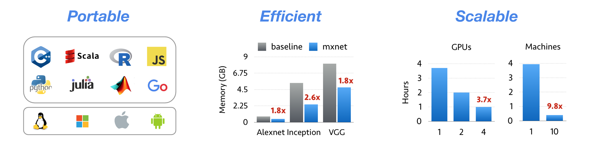

MXNet¶
MXNet is a deep learning framework that has been ported to the HIP port of MXNet. It works both on HIP/ROCm and HIP/CUDA platforms. Mxnet makes use of rocBLAS,rocRAND,hcFFT and MIOpen APIs.
MXNet
Installation Guide for MXNet library¶
ROCm installation¶
Follow the instructions from here -ROCm Installation Guide
Install Dependencies to build mxnet for HIP/ROCm
sudo apt-get install rocm-device-libs rocm-libs rocblas hipblas rocrand
sudo apt-get install rocm-opencl rocm-opencl-dev rocm-utils
sudo apt-get install miopengemm miopen-hip
Install Dependencies to build mxnet for HIP/CUDA
Install CUDA following the NVIDIA’s installation guide to setup MXNet with GPU support
Note
- Make sure to add CUDA install path to LD_LIBRARY_PATH
- Example - export LD_LIBRARY_PATH=/usr/local/cuda/lib64/:$LD_LIBRARY_PATH
Install the dependencies hipblas, rocrand, hcfft from source.
Build the MXNet library¶
Step 1: Install build tools.
$ sudo apt-get update
$ sudo apt-get install -y build-essential
Step 2: Install OpenBLAS. MXNet uses BLAS and LAPACK libraries for accelerated numerical computations on CPU machine. There are several flavors of BLAS/LAPACK libraries - OpenBLAS, ATLAS and MKL. In this step we install OpenBLAS. You can choose to install ATLAS or MKL.
$ sudo apt-get install -y libopenblas-dev liblapack-dev libomp-dev libatlas-dev libatlas-base-dev
Step 3: Install `OpenCV <https://opencv.org/>`_. MXNet uses OpenCV for efficient image loading and augmentation operations.
$ sudo apt-get install -y libopencv-dev
Step 4: Download MXNet sources and build MXNet core shared library.
$ git clone --recursive https://github.com/ROCmSoftwarePlatform/mxnet.git
$ cd mxnet
$ export PATH=/opt/rocm/bin:$PATH
Step 5:
To compile on HCC PLATFORM(HIP/ROCm):
$ export HIP_PLATFORM=hcc
To compile on NVCC PLATFORM(HIP/CUDA):
$ export HIP_PLATFORM=nvcc
Step 6:
If building on CPU:
make -jn(n=number of cores) USE_CUDA=0
If building on GPU:
make -jn(n=number of cores) USE_CUDA=1
Step 7: To enable MIOpen for higher acceleration :
make -jn(n=number of cores) USE_CUDNN=1
NOTE: Currently this feature is under development
On succesfull compilation a library called libmxnet.so is created in mxnet/lib path.
- Note:
- USE_CUDA, USE_CUDNN flags can be changed in make/config.mk.
- To compile on HIP/CUDA make sure to set USE_CUDA_PATH to right CUDA installation path in make/config.mk. In most cases it is - /usr/local/cuda.
Install the MXNet Python binding¶
Step 1: Install prerequisites - python, setup-tools, python-pip and numpy.
$ sudo apt-get install -y python-dev python-setuptools python-numpy python-pip
Step 2: Install the MXNet Python binding.
$ cd python
$ sudo python setup.py install
Step 3: Execute sample example
$ cd example/
$ cd bayesian-methods/
To run on gpu change mx.cpu() to mx.gpu() in python script (Example- bdk_demo.py)
$ python bdk_demo.py